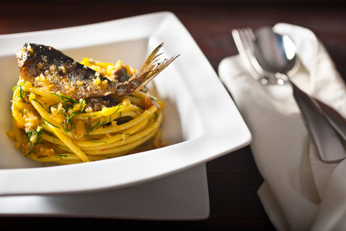

Las Pastas
23 de febrero de 2017
Otro plato que nos trae el sabor del mar a la mesa es la pasta con le sarde alla siciliana. Muy típico de la zona de Palermo, esta receta combina el sabor de las sardinas frescas con el hinojo silvestre. También lleva piñones, almendras tostadas, pasas sultanas (típicas de Sicilia) y azafrán. A veces se le puede añadir un poco de anchoa en aceite para intensificar el sabor. A la hora de elegir la pasta fresca, a los italianos les encanta preparar la pasta cche sardi (así se dice en siciliano) con bucatinis, busiates o maccheroni. Antes de servir, debe permanecer unos minutos en el horno. Es un plato muy antiguo, su origen se remonta a la época de las invasiones árabes de Sicilia y Malta. Después, romanos y griegos siguieron perfeccionando el plato hasta nuestros días. Si visitamos la isla, encontraremos varias versiones. En Catania, por ejemplo, sustituyen la sardina por boquerones.